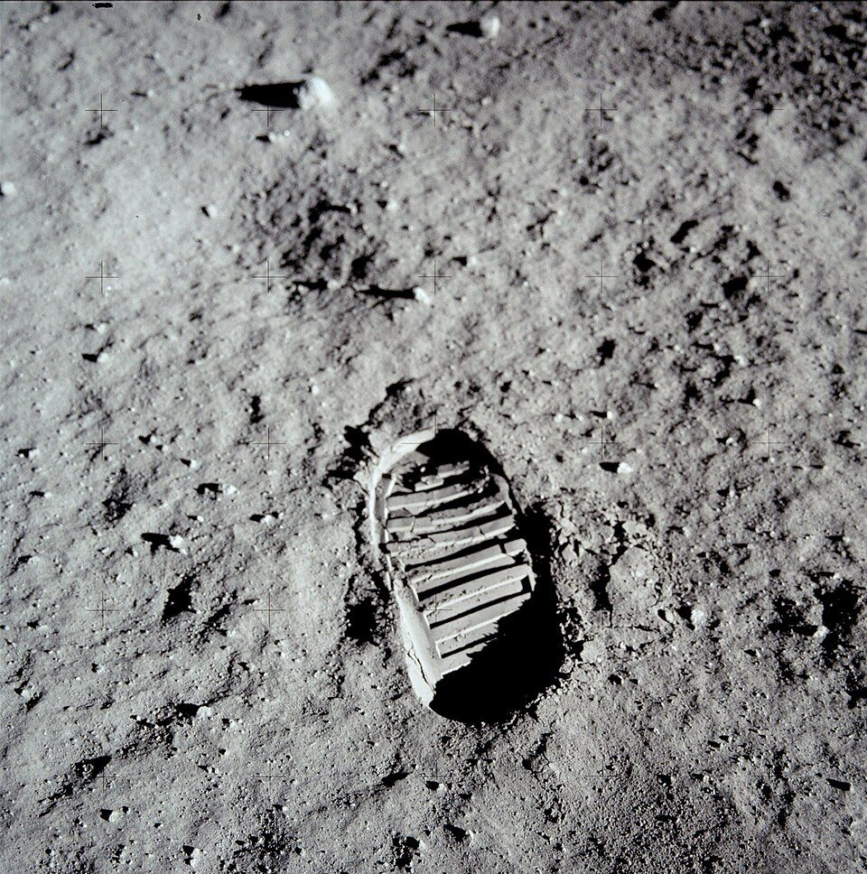

Anecdotes from astronomy and space
From the astronomer who lost his nose in a duel to the sandwich smuggled into space: the most curious stories.


The history of astronomy and space exploration is full of brilliant characters, lucky mistakes and moments that seem lifted from a novel. Here are some of our favourites.
Tycho Brahe's metal nose
The great Danish astronomer Tycho Brahe lost part of his nose in a sword duel in 1566, arguing with a cousin over a mathematical formula. For the rest of his life he wore a brass prosthesis. He also kept a tame elk which, the story goes, died after drinking too much beer and falling down a staircase.
Galileo and Saturn's "ears"
When Galileo pointed his telescope at Saturn in 1610, he saw two bulges at its sides and thought they were moons or "handles". To secure credit for the discovery without revealing it, he sent other astronomers an anagram in Latin. Two years later the bulges disappeared: the rings were edge-on. He never understood what he had seen.
The noise that turned out to be the Big Bang
In 1964, engineers Arno Penzias and Robert Wilson could not get rid of an annoying hiss in their antenna. They even cleaned out the droppings of pigeons nesting in it. The noise remained: it was the cosmic microwave background, the echo of the Big Bang. They won the Nobel Prize in Physics in 1978.
Laika, Belka and Strelka
The dog Laika was the first living creature to orbit Earth, aboard Sputnik 2 in 1957. She did not survive the trip. In 1960 Belka and Strelka spent a day in orbit and came back safely; one of Strelka's puppies was given by Khrushchev to President Kennedy's daughter.
"Poyekhali!"
Before lifting off on 12 April 1961 to become the first human in space, Yuri Gagarin said "Let's go!" (Poyekhali!). After re-entry he ejected from the capsule and parachuted into a field, where a farmer and her granddaughter watched him arrive in his orange suit.
The smuggled sandwich
In 1965, astronaut John Young produced a corned beef sandwich in the middle of the Gemini 3 mission, having sneaked it aboard in his suit. The crumbs floating around the cabin worried NASA so much that the matter reached the US Congress.
An alarm that nearly cancelled the landing
During Apollo 11's descent, the onboard computer threw several alarms, "1202" and "1201". A 26-year-old controller, Steve Bales, decided in seconds that it was safe to continue. Armstrong set the lander down with only about 25 seconds of fuel to spare before having to abort.
Margaret Hamilton's software
Apollo's flight software was led by Margaret Hamilton, who coined the term software engineering. A famous photo shows her next to a stack of code listings as tall as she was.
A golf club on the Moon
In 1971, astronaut Alan Shepard hit two golf balls on the Moon with an improvised club. One of them travelled about 40 metres, not the "miles and miles" he joked about.


The flaw that blinded Hubble
When the Hubble telescope was launched in 1990, its first images were blurry: its main mirror had a flaw of 2 micrometres, a fiftieth of the width of a human hair. In 1993, astronauts fitted it with corrective "glasses" in one of the most famous repair missions in history.
Videos to understand it better
- Introduction to Astronomy: Crash Course Astronomy #1CrashCourse · 5.7M views
Videos are from YouTube and belong to their creators. They only load when you click them. See all videos →